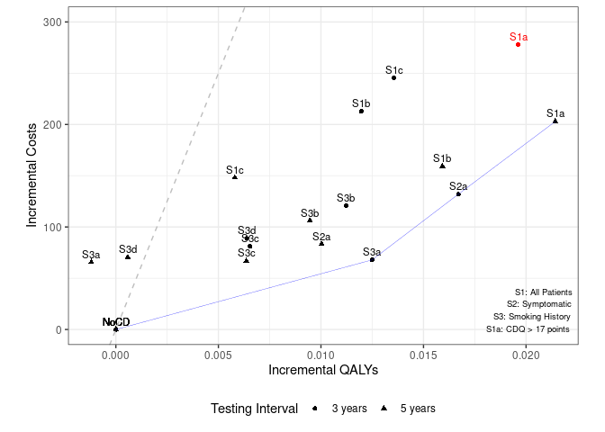

I’ve been finding this quite tricky/slow to get my head around, and want to acknowledge that part of the reason for that will be that this is a complex model subject and - though having studied and done a little work in health economics - I am not a health economist.
There are some things that might have helped though, such as having a clear indicator of which columns and outputs match up with the paper, as its still taking me a while to make sure I’m looking at the same ones, particularly as the results don’t match up.
Continuing from yesterday, when I’d realised that incremental costs and QALYs that subjectively look really similar actually result in really different ICERs, I explored the possibility that the difference in results is actually just down to the number of agents.
Looking in their GitHub commit history, I found results from them running with 1 million base agents (like me here):
Comparing those against Table 3, they are very different from them, and from me as well. This was despite having set the seed to 333, so it appears the seed control might not be working as expected, whether that be my fault for any changes or just in general.
However, their latest results (from 50 million agents) still look quite different to the original, e.g. S1b 3yr ICER $31075/QALY in their repository versus $25,894/QALY in the paper.
Hence, I’m wary that running with 50 million agents on my machine - even if I could - still might not get me the same results.
Reflection
Uncertain on if seed control implemented properly. Also, here, it appears that either the number of agents can’t be reduced to get same results, and that a really high number are needed for stability, or that its actually just a seed issue.
09.49-10.40: Working on Figure 3
Taking a break on Table 3, I looked to Figure 3. The current model code does output two visually similar figures, and it appears I would just need to combine these to get the figure from the paper. This was very easy to get started with - just copying it over, but tweaking to add a grouping for 3 years and 5 years.
I add the efficiency frontier based on the description in the text - looking for lowest cost-effectiveness ratio, and then ruling out strategies that were less effective with a higher ICER. I’m not 100% certain I’ve implemented it correctly, but certainly, it looks different any since the points are all different.

Figure 3 Attempt
Reflection
Was really helpful having partial code for figures, but full code would have been fab (as e.g. I was uncertain if I’m implementing efficiency frontier correctly).
Timings
import syssys.path.append('../')from timings import calculate_times# Minutes used prior to todayused_to_date =588# Times from todaytimes = [ ('09.36', '09.48'), ('09.49', '10.40')]calculate_times(used_to_date, times)
Time spent today: 63m, or 1h 3m
Total used to date: 651m, or 10h 51m
Time remaining: 1749m, or 29h 9m
Used 27.1% of 40 hours max